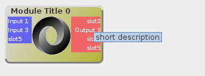
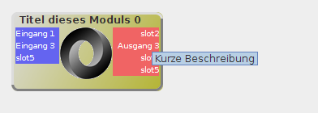
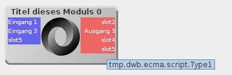

Beliebige Spezifikationen für dWb-Module

Updates
Die Anwendung dWb+ wurde erweitert für den Umgang mit beliebigen Komponenten-Spezifikationen.

dWb als Lösung zum Design von Interaktionen zwischen Funktionseinheiten
dWb+ wurde geschaffen, um algorithmen schnell modellieren und ausprobieren zu können. Dazu werden Komponenten mit standardisierten Schnittstellen visuell auf einem Arbeitstisch arrangiert und ihre Aus- und Eingänge miteienander verbunden. Diese Verbindungen legen den Datenfluss zwischen den Modulen fest.Die modellierten Workflows als Zusammenfassung der Komponenten und ihrer Verbindungen untereinander können gespeichert werden. Damit kann man sie zu einem späteren Zeitpunkt oder an einer anderen Stelle wiederverwenden. Es existiert bereits eine Programmierschnittstelle, um die Workflows in eigenen Formaten direkt aus dWb+ heraus exportieren zu können.
Nun sollte eine Möglichkeit geschaffen werden, mit Komponentendefinitionen arbeiten zu können, die nicht für dWb+ geschaffen wurden. Basierend auf dem Code für den ModuleWorkspace, der auch Grundlage von dWb+ ist, wurde auch der Visuelle Abfrageeditor geschaffen, der eines der zentralen Bestandteile der sQLshell ist. Die neue Aufgabe sollte aber noch weiter gehen: Innerhalb der Anwendung dWb+ sollte es möglich sein, verschiedenste Modulspezifikationen zu mischen.
Definition von Modulen
Ein Modul wird durch Metadaten beschrieben, die Auskunft über das Modul, seine Konnektoren zu anderen Modulen und seinen inneren Aufbau geben. Im ersten Schritt wurden folgende Metadaten definiert:- Informationen
- Dazu gehören der Name des Moduls, eine kurze Beschreibung dessen, was das Modul leistet und eventuell ein Icon zur Visualisierung der Funktion.
- Slots
- Slots liefern Informationen über Kommunikationsschnittstellen, die das Modul zum Informationsaustausch mit anderen Modulen anbietet. Dazu gehören Namen für jeden Slot, Kommunikationsrichtung (Ausgang, Eingang oder beides) und (Daten-)Typ.
Beispiel
Zum Test der neuen Programmierschnittstelle wurde festgelegt, ein Format zu nutzen, das heutzutage in aller Munde ist: JSON bietet als simples Format für hierarchische Schlüssel-Wert-Paare alles, was man braucht. Ein Beispiel für eine Moduldefinition in diesem Format ist hier zu sehen:
{
"name":"JSONSpecDemo",
"displayName":"Titel dieses Moduls",
"displayName_en":"Module Title",
"shortDescription":"Kurze Beschreibung",
"shortDescription_en":"short description",
"iconURL":"http://flori.github.io/json/json_logo.png",
"slotDefinitions":
[
{
"name":"slot1",
"displayName":"Eingang 1",
"displayName_en":"Input 1",
"direction":"in",
"type":"string",
},
{
"name":"slot2",
"direction":"out",
"type":"bool",
"shortDescription":"Kurze Beschreibung",
"shortDescription_en":"short description",
},
{
"name":"slot3",
"type":"numeric",
"displayNameInput":"Eingang 3",
"displayNameInput_en":"Input 3",
"displayNameOutput":"Ausgang 3",
"displayNameOutput_en":"Output 3",
},
{
"name":"slot4",
"direction":"out",
},
{
"name":"slot5",
"type":"Type1",
},
],
}
Man ahnt hier schon, dass dieses Format darauf ausgerichtet ist, die durchgehende
Unterstützung für Internationalisierung in der visuellen Darstellung der Workflows in
dWb+
zu nutzen.
Typisierung
Die Anwendung dWb+ unterstützt den Anwender beim Herstellen von Verbindungen unter anderem, indem sie die Typen der beiden zu verbindenden Slots auf Kompatibilität prüft: es ist unmöglich, Verbindungen zwischen inkompatiblen Slots herzustellen. Wie funktioniert das nun aber mit vollkommen freien Modul-Spezifikationen?Die erste vorliegende Implementierung geht dazu folgenden Weg: JSON bedeutet ausgeschrieben ja Java Script Object Notation. Javascript ist aber eine typlose Sprache. Daher wurde folgende Lösung ersonnen und implementiert: Fundamentaldatentypen werden auf Java-Typen abgebildet - das bedeutet zum Beispiel, daß ein Slot, für den in der Spezifikation als Typ bool angegeben ist, resultiert in einem Slot des Moduls auf dem Arbeitstisch, das den Java-Typ boolean aufweist. Für Slots, für die keine solche Abbildung bekannt ist, wird einfach transparent zur Laufzeit eine Klasse ohne Inhalt generiert. Diese Klasse wird dann als Typ des Modul-Slots auf der Arbeitsfläche benutzt. Damit kann man auch Slots in so spezifizierten JSON-Spezifikationen nur mit anderen verbinden, wenn sie den gleichen Typ aufweisen.
Ergebnisse
Die nächsten beiden Abbildungen zeigen das Ergebnis, wenn die oben dargestellte JSON-Spezifikation auf den Arbeitstisch gezogen wird - einmal, wenn als Systemsprache Deutsch eingestellt ist und einmal wenn die Systemsprache auf Englisch eingestellt ist:
Modul aus JSON-Spezifikation mit Systemsprache Englisch
Modul aus JSON-Spezifikation mit Systemsprache Deutsch In der dritten Abbildung kann man sehen, daß der Mechanismus der transparenten Erzeugung leerer Klassen zur Repräsentation von Typen funktioniert: Es wurde eine Klasse namens Type1 im Namensraum tmp.dwb.ecma.script angelegt und slot5 zugewiesen - damit kann dieser Slot nur noch mit anderen desselben Typ verbunden werden.
Modul aus JSON-Spezifikation mit dynamisch erzeugtem Typ Man kann an den Screenshots alle in der Spezifikation angegebenen Metadaten wiederfinden. Nun kann man beliebige Module oder Komponenten in dieser JSON-Spezifikation beschreiben und sie mittels dWb+ zu einem Workflow kombinieren. Mit einem entsprechenden Export-Modul kann man damit dWb+ als Designwerkzeug für beliebige Workflows benutzen.
Aktualisierung vom 15. April 2015
Artikel, die hierher verlinken
Dokumentation Netzwerklabor mit dWb+
22.04.2017
Der Aufbau des Netzwerklabors, wie er in vorhergehenden Artikeln geschildert wurde, ist nicht statisch: Hin und wieder müssen Maschinen entfernt und hinzugefügt oder in andere Netzwerksegmente verschoben werden. Dazu benötigt man ein Mittel zur Dokumentation
Beliebige Spezifikationen für dWb-Module mit variabler Anzahl von Slots
01.05.2016
Die Anwendung dWb+ wurde erweitert für den Umgang mit beliebigen Komponenten-Spezifikationen. Es soll versucht werden, diese Arbeit weiterzuführen, indem die Modulbeschreibungen so erweitert werden, dass eine variable Anzahl von Eingängen möglich wird.


Vor 5 Jahren hier im Blog
-
Band from TV
09.12.2016
Nachdem ich ihn in Blackadder gesehen hatte wusste ich, dass er ein guter Schauspieler ist - danach konnte ich aber wann immer ich ihn sah ein Lächeln nicht mehr unterdrücken. Das er auch Musik macht, erfuhr ich erst vor ungefähr einem Jahr.
Weiterlesen...
Tags
Android Basteln C und C++ Chaos Datenbanken Docker dWb+ ESP Wifi Garten Geo Git(lab|hub) Go GUI Hardware Java Jupyter Komponenten Links Linux Markup Music Numerik PKI-X.509-CA Python QBrowser Rants Raspi Revisited Security Software-Test sQLshell TeleGrafana Verschiedenes Video Videos Virtualisierung Windows Upcoming...
Neueste Artikel
-
Trojan SQL
Ich habe bereits über Ideen geschrieben, die TrojanSource-Vulnerability in anderen Kontexten zu untersuchen - ein Vorkommnis in dem Job, mit dem ich mir das Geld für Kuchen verdiene hat mich jetzt angestachelt, diese Untersuchung tatsächlich umfangreich und gründlich durchzuführen. Dieser Beitrag wurde zum CCC End-of-year event 2021 eingereicht und abgelehnt.
Weiterlesen... -
Deutsches Tastaturlayout für DigiSparkCustomKeyboard
Nachdem ich neulich über die Hardware und die Motivation dahinter berichtete wollte ich den Prototypen für ernsthafte Aufgaben umrüsten. Das erwies sich nicht als so einfach, wie ich gehofft hatte...
Weiterlesen... -
Generative Art: Mastodon-BitBot
Ich stieß auf meinen Streifzügen durch meine Bubble neulich wieder auf einen interessanten Bot und einen sehr interessanten Eintrag, den dieser gerade generiert hatte:
Weiterlesen...
Manche nennen es Blog, manche Web-Seite - ich schreibe hier hin und wieder über meine Erlebnisse, Rückschläge und Erleuchtungen bei meinen Hobbies.
Wer daran teilhaben und eventuell sogar davon profitieren möchte, muß damit leben, daß ich hin und wieder kleine Ausflüge in Bereiche mache, die nichts mit IT, Administration oder Softwareentwicklung zu tun haben.
Ich wünsche allen Lesern viel Spaß und hin und wieder einen kleinen AHA!-Effekt...
PS: Meine öffentlichen GitHub-Repositories findet man hier.